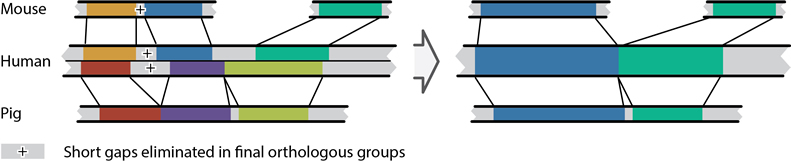
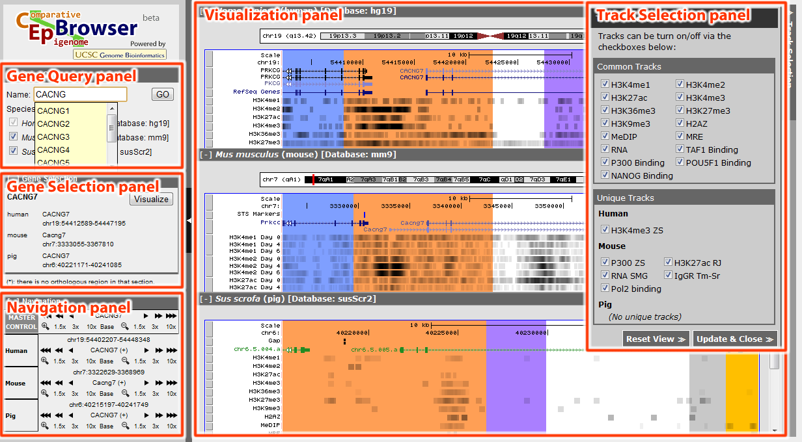
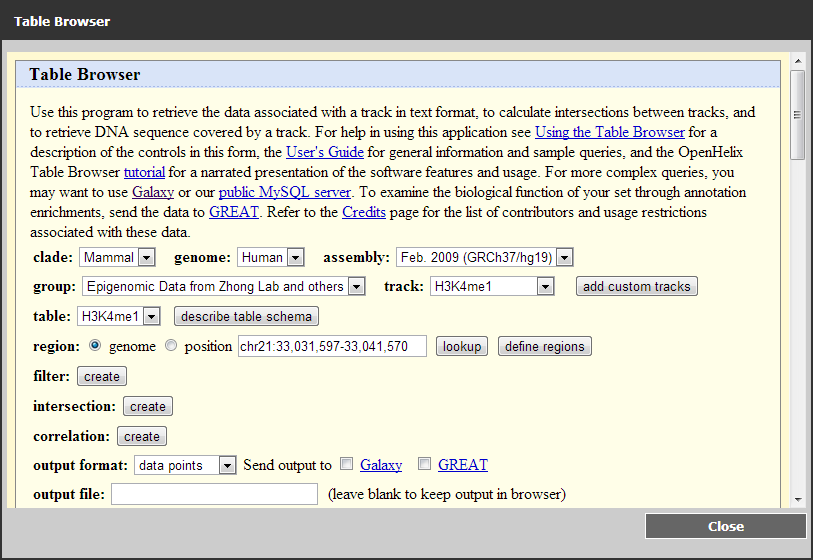

CEpBrowser Manual
In CEpBrowser (Comparative Epigenome Browser), genomes from multiple species are be shown side by side to enhance the comparison of various features, such as transcript information, epigenomic modifications, SNP's, transcription factor binding sites and so on, aiding users in comparative genomic research. Color-coded regions within every gene context indicates the corresponding aligned part in the species to further help in comparison studies.
CEpBrowser is powered by UCSC Genome Browser (http://genome.ucsc.edu/)[1] with some source modification and the addition of new epigenomic data in three species: human, mouse and domestic pig.
Orthologous gene groups are genes that are orthologous across the species, which will help the user to locate the wanted gene and its surrounding genomic regions. Orthologous gene pairs between any two of the species are retrieved from Ensembl Database (http://www.ensembl.org)[2] and then assembled into orthologous groups. In CEpBrowser, the gene context in every orthologous gene group is the gene body with flanking sequences of the same gene length or 10kbp (whichever is larger). The gene context of all selected species will be shown for the orthologous gene group in query. Because there may be many-to-many or one-to-many ortholog relationships in gene pairs, there may be multiple genes for one species in one orthologous group. Users have the choice of which gene context to be shown in the browser.
Aligned segment groups are the color-coded segments in different species in the browser to help user determine the orthologous genetic sequence. Every one of the aligned segment groups will have one of the 16 color in CEpBrowser. The aligned groups are assembled from the human-centric aligned pairs, i.e., a pair of aligned segments between human and the other species, from the chain file in UCSC liftOver tool[3]. The pairs between different species are then merged into a multi-species group in a way that in every aligned segment group, the maximum gap length in any one of the species is not larger than 1200bp. In the case that one species does not have the aligned segments in the aligned group, the gap length is defined as the minimum length of the group in any of the other species. (See the figure below.) Only the aligned segment groups partially overlaps with a gene context in an orthologous gene group will be color-coded and shown in the browser. Gene contexts overlapping with no aligned segment group will have an asterisk (*) after their chromosome coordinates.

Generating the comparable genomic regions of three species. Orthologous sequence pairs were obtained from the chain files generated by UCSC liftOver program [1]. Each orthologous sequence pair is show in one color (left). The grey blocks represent sequence gaps between neighboring orthologous sequence pairs. Two rules were applied to generate three-species comparable genomic regions. The first is induction rule: any mouse segment and any pig segment would be determined as orthologous when according to the chain file they were both orthologous to the same human segment (green segments, right panel). The second is gap elimination. Small gaps (less than 1200bp) between neighboring orthologous sequence pairs were eliminated (marked by +, left panel). The arrow represents this merging process.
So far there are three species supported on CEpBrowser:
For every species, there are a number of tracks showing various epigenomic modifications or transcription factor binding status of the genome. Here is a list of all the epigenomic / TF binding tracks available (in default track order):
| Human | Mouse | Pig |
|---|---|---|
| H3K4me1[6] | H3K4me1[7] | H3K4me1[7] |
| H3K4me2[6] | H3K4me2[7] | H3K4me2[7] |
| H3K4me3[6] | H3K4me3[7] | H3K4me3[7] |
| H3K9me3[6] | H3K9me3[11] | H3K9me3[7] |
| H3K27me3[6] | H3K27me3[7] | H3K27me3[7] |
| H3K36me3[6] | H3K36me3[7] | H3K36me3[7] |
| H3K27ac[6] | H3K27ac[7] | H3K27ac[7] |
| H2A.Z[7] | H2A.Z[7] | H2A.Z[7] |
| MeDIP[8] | MeDIP[7] | MeDIP[7] |
| MRE[8] | MRE[7] | MRE[7] |
| TAF1[9] | TAF1[7] | TAF1[7] |
| P300[9] | P300[12] | P300[7] |
| POU5F1[10] | Pou5f1[12] | Pou5f1[7] |
| NANOG[10] | Nanog[12] | Nanog[7] |
| RNA-Seq[7] | RNA-Seq[7] | RNA-Seq[7] |
For further comparison across different species, some unique tracks showing results from other groups have been included in CEpBrowser to enable better comparison and/or individual study purposes. These include two sets of differentiation experiment tracks, the hESC to hNEC (human nasal epithelial cells) differentiation results are retrieved from works published by Joanna Wysocka Lab[13] and mouse time-course differentiation results come from Zhong Lab[7]. The details of the unique tracks can be seen in the table below.
| Species | Track name | Details | Ref |
|---|---|---|---|
| Human | H3K4me3_ZS | H3K4me3 binding in human ESC from Zhong Lab. For comparative purposes. | [14] |
H3K4me1_JW |
H3K4me1 binding in human ESC and NEC from Joanna Wysocka Lab. |
[13] | |
| H3K27ac_JW | H3K27ac binding in human ESC and NEC from Joanna Wysocka Lab. | ||
| H3K4me3_JW | H3K4me3 binding in human ESC and NEC from Joanna Wysocka Lab. | ||
| H3K27me3_JW | H3K27me3 binding in human ESC and NEC from Joanna Wysocka Lab. | ||
| p300_JW | P300 binding in human ESC and NEC from Joanna Wysocka Lab. | ||
| ESC_BRG1_JW | BRG1 binding in human ESC from Joanna Wysocka Lab. | ||
| ESC_FAIRE_JW | FAIRE binding in human ESC from Joanna Wysocka Lab. | ||
| Input_JW | Input in human ESC and NEC from Joanna Wysocka Lab as control. | ||
| mouse | H3K4me1 Tm-Sr | H3K4me1 binding in mouse ESC to definitive endoderm differentiation (Day 0, 4, 6). | [7] |
| H3K4me2 Tm-Sr | H3K4me2 binding in mouse ESC to definitive endoderm differentiation (Day 0, 4, 6). | ||
| H3K27ac Tm-Sr | H3K27ac binding in mouse ESC to definitive endoderm differentiation (Day 0, 4, 6). | ||
| H3K4me3 Tm-Sr | H3K4me3 binding in mouse ESC to definitive endoderm differentiation (Day 0, 4, 6). | ||
| H3K36me3 Tm-Sr | H3K36me3 binding in mouse ESC to definitive endoderm differentiation (Day 0, 4, 6). | ||
| H3K27me3 Tm-Sr | H3K27me3 binding in mouse ESC to definitive endoderm differentiation (Day 0, 4, 6). | ||
| H3K9me3 Tm-Sr | H3K9me3 binding in mouse ESC to definitive endoderm differentiation (Day 0, 4, 6). | ||
| H2A.Z Tm-Sr | H2A.Z binding in mouse ESC to definitive endoderm differentiation (Day 0, 4, 6). | ||
| MeDIP Tm-Sr | MeDIP in mouse ESC to definitive endoderm differentiation (Day 0, 4, 6). | ||
| MRE Tm-Sr | MRE in mouse ESC to definitive endoderm differentiation (Day 0, 4, 6). | ||
| RNA Tm-Sr | RNA profiling in mouse ESC to definitive endoderm differentiation (Day 0, 4, 6). | ||
| IgGR Tm-Sr | IgGR control in mouse ESC to definitive endoderm differentiation (Day 0, 4, 6). | ||
| P300_ZS | P300 binding in mouse ESC from Zhong Lab. For comparative purposes. | [14] | |
| H3K27ac_RJ | H3K27ac binding in mouse ESC from Rudolf Jaenisch Lab. | [15] | |
| RNA_SMG | Transcriptome profiling in mouse ESC from Sean M Grimmond Lab. | [16] | |
| Pol2 binding | Pol2 binding track by Zhong Lab. For comparative purposes. | [14] |
CEpBrowser consists of four panels: gene query panel, gene selection panel, navigation panel, visualization panel and two folded panels: track selection panel (See figure below) and track information & settings panel. The left panels can be folded so that all the panels can be accessible under smaller screen resolution. The entire left panel group can also be hidden to further provide space for the visualization panel.

Comparative Genomic Browser interface. The gene query panel, gene selection panel, navigation panel, visualization panel and track selection panel are shown.
 Look up genes in gene query panel
Look up genes in gene query panel
To use CEpBrowser, the first step is to look the gene in interest up in the gene query panel (see figure to the right).
CEpBrowser employs AJAX to show a gene name candidate list (see the yellow box in the figure) when partial (at least 2 characters long) gene name is given.
The Species Selection boxes are used to select the species to visualize in the browser. Species name, the common name and database version are shown beside the boxes. At least two species need to be checked to continue and because the orthologous segment groups are anchored by human genome, human must be one of the checked.
After everything is set, click GO to continue.
 View query results in gene selection panel
View query results in gene selection panel
 gene selection panel. Two genes exist in human for POU5F1. Therefore, it's possible to choose the chromosome location in human to visualize by drop menu. The gene in pig does not have a name, so its Ensembl ID is shown.
gene selection panel. Two genes exist in human for POU5F1. Therefore, it's possible to choose the chromosome location in human to visualize by drop menu. The gene in pig does not have a name, so its Ensembl ID is shown.After a query is submitted, the selected orthologous gene group will be shown in gene selection panel and will be instantly visualized in visualization panel as well. If partial gene name is provided as the query, all orthologous gene groups whose gene name in human partially match the query (for example, "POU5F1" will match query "pou", "ou5f", etc. The match is case-insensitive.) will be shown. User will need to select which orthologous gene group to visualize.
The gene selection panel shows the gene name in all selected species together with the chromosome locations (see figure to the right) for every matched orthologous gene group. For genes without a name in any species, the Ensembl ID will be shown instead.
If there are more than one gene context for one species in an orthologous group, there will be a drop-down menu for chromosome locations of the gene contexts in that species. By selecting the chromosome locations, user can specify which gene context to be visualized. Chromosome locations with an asterisk (*) means the corresponding gene context does not overlap with any orthologous segment group, i.e., no colored regions will appear in visualization. The gene name in species will change if different gene context is selected.
After the gene context is decided, click the corresponding Visualize button to visualize the orthologous gene group.
 Visualize the orthologous gene group in the visualization panel
Visualize the orthologous gene group in the visualization panel
In visualization of genes, a split vision of genomes of all the selected species is shown to compare the genomes in a side-by-side view. One orthologous segment group within a gene context will be shaded in the same color. There are a total of 16 colors in CEpBrowser (see right) and if the number of orthologous segment groups is less than 16, every group will be assigned a unique color.
Because there may be multiple gene contexts within one orthologous gene group, it is likely that some color-shaded segment does not appear in one or more species. Select a different chromosome location in the gene selection panel may help to reveal the missing segments.
The genome browser is powered by UCSC Genome Browser so virtually all operations of UCSC Genome Browser can be conducted in any of the genomes in the visualization panel, such as zooming in/out, moving up/downstream and order the tracks by drag-and-drop. All tracks will be shown in a "dense" format, where darker means higher signal.
|
In the cases when there are more than 16 orthologous segment regions within one gene context or when the orthologous segment region does not appear in some of the species, a track with all the name and the direction of the Orthologous Segment Groups ("Multi-species Alignment Track") is provided to the bottom of every species to help identifying the exact orthologous relationship across species (see figure below).

Visualization Panel and Multi-species Alignment Track. Species name and information are shown on top of every sub-panel (also collapsible via clicking the name). By clicking the blue buttons to the left of every track, track information & settings panel will pop-up. Multi-species Alignment Track is on the bottom half of every sub-panel. This track contains information about all the orthologous segment groups. The groups with the same unique name are orthologous in all species and have the same color shade in all panels.
If you want to see the track information, you can do so by clicking the blue button to the left of every track to open track information & settings panel. The information includes data source, GEO accession number and references (if any).
The view for every individual species can be collapsed by clicking the species name if desired.
 Navigate CEpBrowser via navigation panel
Navigate CEpBrowser via navigation panel

The navigation panel is provided to navigate through the selected orthologous gene group. The buttons in MASTER CONTROL is linked with all the buttons in individual species, to enable synchronized navigation, There are two types of controls in the navigation panel: sliding controls enable user to slide to the upstream / downstream region of the current view; zooming controls allow user to zoom in / out a certain part of the genome. The direction of sliding controls in MASTER CONTROL is regarding to the gene, therefore, if certain gene is on the Crick strand in one species (as is indicated near the gene name), going upstream in MASTER CONTROL will cause the view in that species moving right.
|
 Use tracks & data panel to control the display of tracks and download data
Use tracks & data panel to control the display of tracks and download data
tracks & data panel is used to control which of the tracks will be shown in the browser. All tracks available to all species will be shown here and by checking the corresponding boxes, tracks can be made hidden to provide better focus. Common tracks are tracks that exist in all species and unique tracks are the tracks that only exist in the selected species (many are replicated experiments to provide better comparison).
To download the full data used to display the tracks, please click the download file button to the right of every track, a download data panel will be popped up to provide the following information to every track component (there may be several of them in every track, especially the common ones): the link to the data file, the description of data (hover on the link to see) and the data type.
Reset View can be used to reset the views to their default, which will show all available tracks in their default order.
This panel is hidden by default and will be hidden after either resetting the view or applying changes in the settings.
 Show track information and adjust settings in track information & settings panel
Show track information and adjust settings in track information & settings panel
By clicking the blue button to the left of a track, track information & settings panel will be shown with the UCSC Genome Browser settings page, including a detailed control over the tracks as well as the information of it. (See figure below.)

Track Information & Settings panel. This panel provides detailed settings for all the tracks as well as the information of the selected track.
This panel will be automatically hidden if the changes in settings are submitted. Close button can be used to close the panel without applying any changes in the settings.
 Use Table Browser panel to download data within specific regions and access other services
Use Table Browser panel to download data within specific regions and access other services
By clicking Table Browser button to the right of Visualization panel, you will be able to access this new panel implemented by Table Browser of UCSC Genome Browser. (See figure below.)

Table Browser panel. This panel, implemented by UCSC Table browser, provides controlled data downloading function together with other related functionarities.
This panel will provide you the function of downloading the data of regions of interest from all tracks shown in CEpBrowser. Data specific to CEpBrowser are available in "Epigenomic Data from Zhong Lab and others" group (as is seen in the figure). Close button can be used to close the panel.
If you have any questions or comments regarding to Comparative Epigenome Browser, you may contact us by sending an email to Xiaoyi Cao (x9cao at ucsd dot edu).